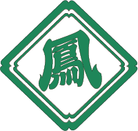

創立140年専修大学鳳祭は、10月31日（木）から11月3日（日）の４日間かけて、生田キャンパスにて開催されます。 創立140年専修大学鳳祭のメインテーマは「始（はじまり）－１４０年の軌跡、想いと共に－」です。140年という大きな節目を迎えた鳳祭がさらなる発展を目指して、新しい挑戦をしていくことから、新たな時代の幕開けという意味を込めて始（はじまり）の文字を選びました。また、140年という歴史を作った先輩達の努力や想い、築き上げて来た成果を忘れることなく、創立140年鳳祭実行委員会でこれまでにない鳳祭を作っていきたいという思いを込めてこのメインテーマに決定しました。
専修大学鳳祭とは、本学最大の学園祭です。 近年では本学学生を中心とし約5万人もの来場者の方に足を運んで頂いております。 鳳祭は、学内サークル・ゼミナール・学術文化会・連合県人会など約200団体が参加して、研究発表・スポーツ・音楽など多彩な催しを開いております。 私たち鳳祭実行委員会は、期間中に前夜祭やライブステージ、トークショー、ミス専修コンテスト、ミスター専修コンテストと沢山の企画をご用意しています。皆様の思い出に残るものとなるよう、更なる発展を目指して、実行委員会が一丸となって活動しております。 実行委員会一同、心より皆様のご来場をお待ち申し上げております。
創立140年専修大学鳳祭実行委員会のホームページをご覧いただきまして誠にありがとうございます。創立140年専修大学鳳祭実行委員会委員長の守屋颯人と申します。我々鳳祭実行委員会は、毎年約5万人も方々にお越しいただいております、専修大学で最大の大学祭である「鳳祭」の企画運営を行っております。今年度は本大学が創立140年という一大イベントを迎えるにあたり、昨年度までの企画をより盛り上げるべく各企画の見直しやリニューアル、新企画の考案をしております。先代から受け継がれてきました伝統を引き継ぎつつも、我々にしか作れない新たな鳳祭を作り上げるべく実行委員会一同励んでおります。専修大学のみならず OBOGの方々や地域の方々、専修大学の受験を考えてくださっている高校生の方々など、たくさんの方に専修大学の熱気、盛り上がりを肌身で感じていただけましたら幸いです。今年度の開催日は10月31日(木)から11月3日(日)までの計4日間です。実行委員会一同皆様のご来場を心よりお待ちしております。
創立140年専修大学鳳祭実行委員会 委員長 守屋颯人

鳳祭をもっと盛り上げたい！という思いにより、今年からマスコットキャラクターを製作することが決定しました。「といろ」という名前には、鳳祭に関わった人が十人十色に輝けるように、という意味が込められています。また、o-toriのローマ字を並び替えるとtoiroとなることから、この名前となりました。 これから皆さんに親しまれるキャラを目指しますのでよろしくお願いします！！
ツイッターアカウント：＠ohtori_toiro
名前：といろ
誕生日：10月16日
年齢：不詳
性別：オス
性格：思ったことをすぐ口走ってしまう。結構優しい。
口癖：「っぴ」
出身：生田緑地
好きなこと：バス登校